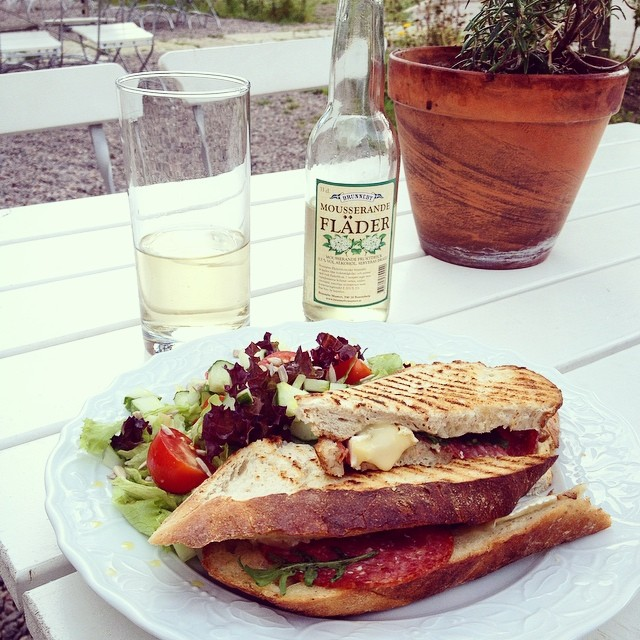
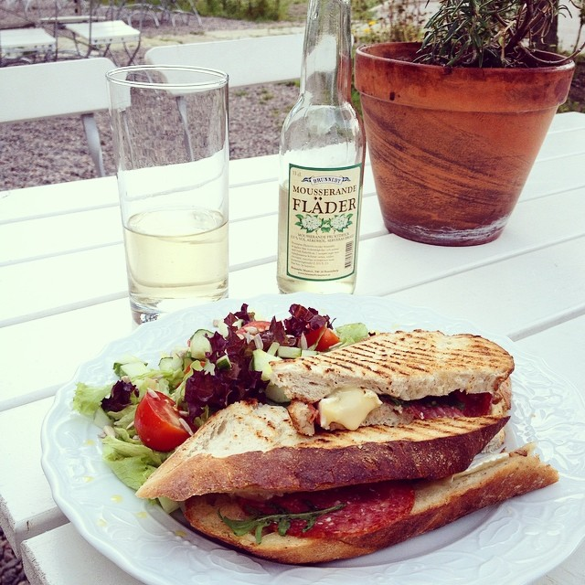

Welcome to Café Visthuset!
During the winter of 2010, we started renovating one of Töreboda’s oldest buildings. Fifty years had passed since the last butcher, the third in succession, closed down his business at this location. During the years that followed, nobody felt responsible for the maintenance of the building and its condition became run down with time. Some people wanted the building to be torn down and it almost came to that. But for some reason, the building was spared and for 10 years it was partially used as storage and garage. During the time we spent restoring and renovating the building we heard a lot of stories about and from people that had been connected to this site.
Since the time of Johannes the butcher, around 1910 and onward, this had been a meeting point were deals were struck, conversations made and things were bragged about. Surely one got to hear the latest gossip about the residents in the area. During this time a blacksmith and a bakery could also be found here, so it is easy to imagine that this place was full of life then.
During the summer of 2011 and 2012 our business was limited to the downstairs story in one part of the building. Prior to the summer season of 2013 we worked hard to get the upper floor ready for usage. Here you will now find several cosy spots to sit in and we have room for various small exhibitions from local artists.
In the attic you can enjoy your coffee or lunch in peace and quiet or you could have some delicious ice cream outside in our garden right next to the canal. Please feel free to ask us about this place and the people associated with it, we have many stories to share!